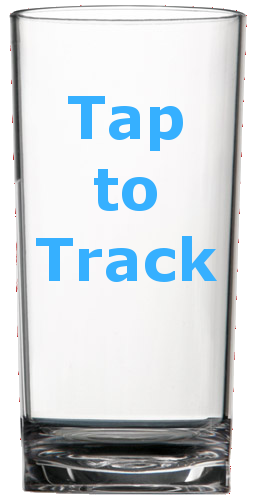

<!-- <table class="tracker_table">
	<tr>
		<td></td>
		<td>Daily</td>
		<td>Weekly</td>
	</tr>
	<tr>
		<td>Required</td>
		<td>64 oz</td>
		<td>448 oz</td>
	</tr>
	<tr>
		<td>Current</td>
		<td>16 oz</td>
		<td>224 oz</td>
	</tr>
	<tr>
		<td>Consumption %</td>
		<td>25%</td>
		<td>50%</td>
	</tr>
</table> -->

<div class="water_glass"><a href="#" onclick="addCount();"></a></div>
<div class="water_content">
<h2 class="glass_count"><span id='count'></span>/8</h2>
<h1>Glasses Today</h1>
</div>
<script>
  // Parse.User.current().fetch();
  var currentCount = Parse.User.current().get('water_count');
  $('#count').html(currentCount);
  function addCount() {
    if (currentCount < 8){
      Parse.User.current().increment('water_count', 1);
      Parse.User.current().save();
      currentCount += 1;
      $('#count').html(currentCount);
    }
  }
</script>
